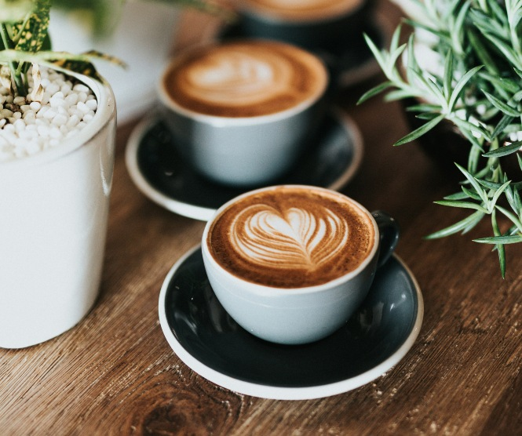
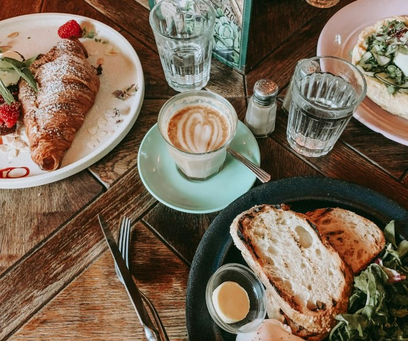

Tervetuloa Kahvila Kanelipuuhun, missä tuoreet maut ja lämmin ilmapiiri kohtaavat! Meille jokainen hetki on arvokas
ja jokainen asiakas tärkeä. Kahvilamme tarjoaa sinulle paitsi herkullisia kahvijuomia ja leivonnaisia, myös kodikkaan
ympäristön rentoutumiseen ja nautiskeluun.
Astu sisään ja anna aromien viedä sinut matkalle kahvin maailmaan. Valikoimastamme löydät laadukkaita kahvilajeja ympäri maailmaa,
jotka on valmistettu taidolla ja intohimolla. Lisäksi tarjoamme vaihtoehtoja erilaisiin makumieltymyksiin, oli kyse sitten cappuccinosta,
espressosta tai trendikkäästä flat white -kahvista.
Herkullisen kahvin lisäksi tarjoamme runsaan valikoiman tuoreita leivonnaisia ja herkkuja, jotka täydentävät kahvihetkesi täydellisesti.
Leivomme päivittäin paikan päällä, joten voit aina nauttia tuoreudesta ja laadusta jokaisella suupalalla. Lounasaikaan tarjolla on
herkullisia voileipiä ja kattava salaattipöytä. Viikonloppuisin pääset nauttimaan koko päivän brunssista, jonka
valikoima vaihtelee viikoittain.
Kahvilamme on myös loistava paikka rentoutua ja nauttia hyvästä seurasta. Vietä aikaa ystävien kanssa tai nauti hetkestä oman seurasi
kanssa mukavassa ympäristössämme. Tarjoamme myös langattoman internetin, joten voit halutessasi työskennellä tai selata nettiä samalla
kun nautit kahvistasi. Teksti: ChatGPT
AUKIOLOAJAT: ARKISIN 10-18, VIIKONLOPPUISIN 9-17

